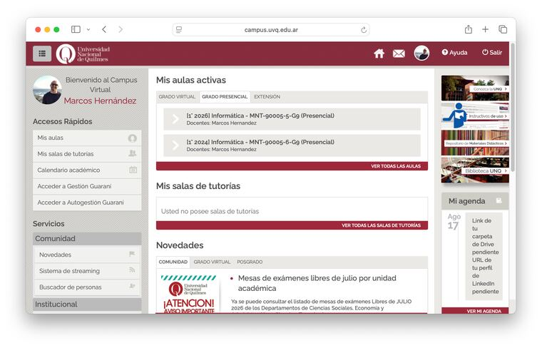
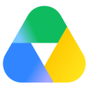
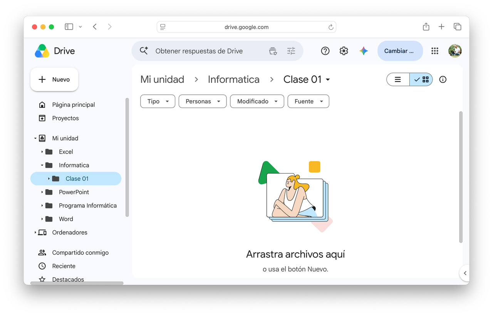
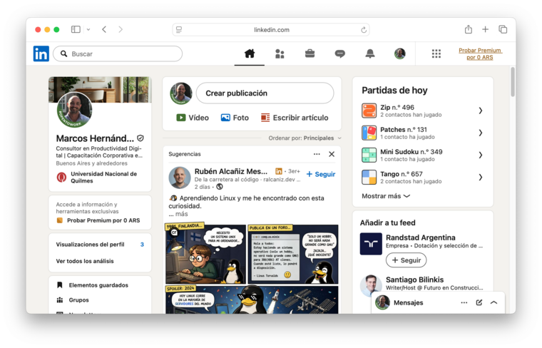

Campus virtual UNQ y el mapa de internet
Internet no es un lugar único: es un mapa con capas, y la mayoría de lo que usás todos los días vive en una que ni siquiera podés buscar en Google. Antes de entrar al campus virtual, vale la pena mirar ese mapa completo — así sabés, en cada momento, en qué parte de internet estás parado.
Internet superficial, deep web y dark web
Cuando alguien dice "lo busqué en internet", casi siempre se refiere a una sola cosa: lo que un buscador como Google puede mostrarte. Pero eso es apenas la superficie. La mayor parte de lo que existe en la red no es indexable — no aparece en ningún resultado de búsqueda — y sin embargo es perfectamente legal y de uso cotidiano.
💡 Idea clave
Internet se suele representar como un iceberg: lo que ves en un buscador es apenas la punta. La mayor parte está debajo del agua.
| Capa | Qué es | Ejemplos |
|---|---|---|
| Internet superficial | Todo lo que un buscador como Google puede indexar y mostrarte. | Wikipedia, diarios, redes sociales públicas, YouTube. |
| Deep web | Contenido real que existe pero está detrás de un login, un paywall o una base de datos — Google no puede "verlo". | El campus de la UNQ, tu Gmail, tu homebanking, bases de datos académicas pagas. |
| Dark web | Una porción chica de la deep web, a la que solo se accede con software específico (como Tor), pensada para el anonimato. | Conviven usos legítimos (periodistas, activistas bajo censura) con mercados ilegales. |
⚠️ Advertencia
La deep web es enorme y en su mayoría totalmente legal: es simplemente lo que no es público, como tu email o el campus. La dark web es mucho más chica y tiene mala fama por asociarse a actividad ilegal, aunque no todo lo que hay ahí lo sea. Nada de esta materia requiere entrar a la dark web.
Ya tenés el mapa. El campus virtual de la UNQ vive justo en la segunda capa, la deep web — necesitás usuario y contraseña para entrar, y Google jamás te lo va a mostrar en una búsqueda. Antes de entrar, un tema que te va a servir ahí y en cualquier cuenta que tengas: cómo protegerla.
Seguridad básica: verificación, contraseñas y phishing
Tres hábitos que reducen la mayoría de los riesgos con tus cuentas — conviene tenerlos incorporados antes de escribir tu usuario y contraseña en ningún lado, empezando por el campus.
⚠️ Advertencia
La contraseña sola ya no alcanza. Las filtraciones de datos son constantes: si reusás la misma contraseña en varios sitios, un solo hackeo compromete todas tus cuentas.
| Hábito | Qué es | Por qué importa |
|---|---|---|
| Verificación en dos pasos (2FA) | Un segundo código (SMS, app, llave física) además de la contraseña. | Aunque roben tu contraseña, no pueden entrar sin el segundo factor. |
| Gestor de contraseñas | Una app que genera y guarda una contraseña única por sitio. Google ya tiene uno integrado en tu cuenta (passwords.google.com), gratis y sin instalar nada más; si preferís uno aparte, Bitwarden es gratuito y funciona en cualquier navegador o dispositivo. | Elimina la costumbre de reusar la misma contraseña en todos lados. |
| Reconocer phishing | Mensajes, emails o páginas que imitan a una entidad real para robarte datos. | Señales de alerta: urgencia, remitente extraño, links cuyo dominio no coincide con el oficial. |
Para leer una URL o un mail y detectar ese desvío: lo que importa es el dominio, el texto pegado justo antes de la primera / que sigue a https:// (sin contar subdominios como www. o campus.). Por ejemplo, en https://campus.uvq.edu.ar/login —la dirección a la que vas a entrar en un momento— el dominio real es uvq.edu.ar. Un mail se lee igual: en nombre@dominio.com, lo que identifica al remitente real es el dominio después de la @ — soporte@unq-verificacion.com no es la UNQ, aunque el nombre de usuario suene oficial.
🔎 Para hacer ahora
- Activá la verificación en dos pasos en tu cuenta de Google (Cuenta de Google → Seguridad → Verificación en 2 pasos).
- Pasá el mouse (sin hacer clic) sobre un link de un email reciente y mirá qué URL real aparece.
Ya sabés protegerte. Ahora sí, entremos al campus.
Entrar al campus
Todo lo que vas a leer, entregar y consultar en esta materia —y en toda la carrera— pasa por acá. No es opcional.
Ya tenés usuario: te lo generaron cuando te inscribiste en la universidad. Andá a campus.uvq.edu.ar, iniciá sesión con tu usuario y contraseña, y buscá el aula de Informática. Ahí vas a encontrar la clase de hoy, los avisos del docente y el lugar donde subís tus entregas.
⚠️ Advertencia
Escribí campus.uvq.edu.ar directo en la barra de direcciones del navegador — no hace falta googlearlo. Si lo buscás, podés terminar en un resultado patrocinado o en una página clon que imita al campus real (phishing). Fijate el dominio antes de escribir tu contraseña: tiene que ser exactamente uvq.edu.ar.

Así se ve el campus una vez que iniciás sesión: tus aulas activas y, en la agenda, los pendientes de cada clase.
⚠️ Advertencia
Si no recordás tu contraseña, primero intentá restablecerla desde la pantalla de inicio de sesión ("¿Olvidaste tu contraseña?"). Si eso no funciona, o tenés otro problema para entrar, escribí a soporte@uvq.edu.ar o por WhatsApp al +54 9 11 6641 4809. No lo dejes para el día antes de una entrega.
Además de entrar por el navegador, la UNQ tiene una app oficial para el celular: Moodle. No es una opción más entre tantas — es la app real de la plataforma, y está disponible ahora mismo para instalar.
Instalá la app
- Buscá Moodle en Play Store (Android) o App Store (iPhone) y descargala.
- Abrila, elegí "Soy un estudiante" y buscá tu sitio:
qoodle.uvq.edu.ar - Iniciá sesión con tu usuario y contraseña del campus.
- Activá las notificaciones de la app para no perderte avisos del docente.
Ya diste un paso concreto para dejar de ser usuario pasivo: sabés en qué capa de internet vive cada cosa que usás, sabés protegerte y ya estás adentro del campus. El siguiente paso es entender qué pasa un escalón más allá — cuando esa información que generás y guardás vive en la nube — y qué das a cambio.
La nube y Google Drive

"Subí el archivo a la nube." ¿Pero qué es exactamente la nube? No es algo etéreo flotando en el aire: es una red de servidores (computadoras muy potentes) distribuidos por el mundo, a los que accedés a través de internet. Solo se llama "nube" por marketing. Cuando guardás algo en Drive (drive.google.com), ese archivo viaja por un cable físico y queda en un servidor, en algún edificio de algún país.
| Ventajas | Limitaciones |
|---|---|
| Acceso desde cualquier dispositivo. | Necesitás internet para acceder. |
| No perdés archivos si se rompe tu dispositivo. | El proveedor puede leer tus datos. |
| Trabajo colaborativo en tiempo real. | Dependés de otra empresa. |
| Actualizaciones automáticas. | Si la empresa cierra, podés perder el acceso. |
Google Workspace (Docs, Sheets, Slides) es el ejemplo más claro de herramienta colaborativa: varias personas editan el mismo archivo en tiempo real, ven los cambios al instante y comentan sin perder versiones.
El precio de lo gratis
Gmail, Instagram, WhatsApp, TikTok. Todas gratuitas. ¿Por qué una empresa que vale cientos de miles de millones de dólares te da un servicio sin cobrarte nada? La respuesta es corta: porque vos no sos el cliente. Sos el producto.
⚠️ Advertencia
"Si no estás pagando por el producto, vos sos el producto." No es maldad: es el contrato implícito que aceptás cuando creás una cuenta.
| Tipo de dato | ¿Qué recopilan? | ¿Para qué sirve? |
|---|---|---|
| Ubicación | Dónde estás, con qué frecuencia vas a ciertos lugares. | Publicidad geolocalizada. |
| Búsquedas | Qué te preocupa, qué enfermedad buscaste. | Publicidad por intención de compra. |
| Relaciones | Con quién hablás, con qué frecuencia. | Análisis de redes sociales. |
| Shadow profiles | Datos sobre vos aunque NO tengas cuenta. | Publicidad a personas que no son usuarias. |
💰 Cómo pagamos Google Drive
Los Términos de Servicio de Google, resumidos: le das licencia para alojar y procesar tu contenido, y puede analizarlo con sistemas automáticos para personalizar resultados y anuncios (desactivable en tu cuenta). Ese es el precio real de "gratis". Texto completo en policies.google.com/terms.
📋 Tu derecho a la protección de datos
En Argentina, la Ley 25.326 de Protección de Datos Personales te da derecho a saber qué datos tienen sobre vos y pedir que los corrijan o los borren (derechos de acceso, rectificación y supresión). Podés ejercerlo ante cualquier empresa que use tus datos.
Nada de esto es motivo para dejar de usar estas herramientas — son gratuitas porque cumplen una función real. La idea es usarlas con conciencia, sabiendo qué das a cambio — incluido lo que acabás de leer sobre el paquete de Google — no evitarlas por paranoia.
Cómo organizar tu Drive
Si es tu primera vez en Drive: andá a drive.google.com, iniciá sesión con tu cuenta de Google, y hacé clic en + Nuevo (arriba a la izquierda) para crear una carpeta. Así se ve por dentro:

Clase 01">Arriba a la izquierda, el botón + Nuevo. Arriba del todo, la ruta de carpetas te dice dónde estás parado — acá, dentro de "Informática > Clase 01".
La primera habilidad profesional del entorno digital es nombrar archivos de forma que los encuentres en seis meses. No "Trabajo final v2 bueno este si.docx". El formato que usás en toda la cursada es:
📋 Formato de nomenclatura
Nombre del archivo - Versión — Ejemplo: Actividad 2 - V01
La carpeta "Informática - UNQ" y la subcarpeta "Clase 01" ya dicen qué materia es y qué clase. El nombre del archivo no necesita repetirlo — solo necesita decir qué es y qué versión, para que lo encuentres en seis meses sin pensar.
📁 Convención de carpetas
Vas a acumular archivos de varias clases a lo largo del cuatrimestre. Desde hoy, cada clase tiene su propia subcarpeta dentro de "Informática - UNQ": Clase 01, Clase 02, etc. Es un hábito, no una tarea extra — solo funciona si empieza desde el primer día.
Tu espacio de trabajo digital
- Creá la carpeta "Informática - UNQ" en Drive.
- Adentro, creá la subcarpeta "Clase 01". A partir de hoy cada clase va a tener la suya — es la diferencia entre encontrar un archivo en 5 segundos o no encontrarlo nunca.
- Compartí la carpeta "Informática - UNQ" (no la subcarpeta) con el docente: clic derecho sobre la carpeta → Compartir → escribí
unqarchivos@gmail.com→ elegí el rol Editor → Enviar. Fijate que también existe el modo Comentar: no modifica el documento, solo permite sugerir cambios — sirve para trabajo colaborativo sin alterar el original.
Ya tenés tu espacio de trabajo organizado. El siguiente paso es saber qué hacer con la información que buscás y guardás ahí: cómo encontrarla, validarla y usar IA sin caer en sus errores más comunes.
Búsqueda, validación y uso de IA
Buscar no es lo mismo que encontrar información de calidad. Validar no es lo mismo que creerle al primer resultado. Y usar IA no es lo mismo que pensar con IA. Es la parte central de dejar de ser usuario pasivo: acá aprendés a decidir qué información merece tu confianza.
Operadores de búsqueda en Google
Los operadores son comandos especiales que refinan los resultados en Google (google.com). La búsqueda sin operadores te da millones de resultados; con operadores, te da los que realmente necesitás.
| Operador | Para qué sirve | Ejemplo |
|---|---|---|
"comillas" | Busca la frase exacta. | "cambio climático en Argentina" |
-menos | Excluye un término. | jaguar -auto |
site: | Busca dentro de un dominio. | site:conicet.gov.ar IA |
filetype: | Busca por tipo de archivo. | filetype:pdf informe 2025 |
2020..2026 | Rango de años. | economía argentina 2020..2026 |
🔎 Para explorar
Elegí un tema de tu carrera y probá un operador que no conocieras (site: o filetype:, por ejemplo). Compará los resultados con la misma búsqueda sin operadores: ¿cambia la calidad de lo que aparece?
Criterios CRAAP
CRAAP es un método para evaluar si una fuente merece tu confianza. Cinco criterios, cinco preguntas. Si una fuente no pasa el filtro, no la usás.
| Letra | Criterio | Preguntas clave |
|---|---|---|
| C | Actualidad (Currency) | ¿Cuándo fue publicado? ¿Está actualizado? |
| R | Relevancia (Relevance) | ¿Responde tu pregunta? ¿Es para tu nivel? |
| A | Autoridad (Authority) | ¿Quién es el autor? ¿Tiene credenciales verificables? |
| A | Exactitud (Accuracy) | ¿Las afirmaciones están respaldadas con fuentes? |
| P | Propósito (Purpose) | ¿Para qué fue creado: informar, vender, persuadir? |
💡 Idea clave: lectura lateral
CRAAP evalúa la fuente mirando adentro de ella: quién la firma, cuándo se publicó, qué dice. La lectura lateral hace lo contrario — antes de leer a fondo, abrís una pestaña nueva y buscás qué dicen otros medios o especialistas independientes sobre esa misma fuente o afirmación. Es el método que usan los verificadores profesionales para detectar una fuente poco confiable en segundos. No reemplaza a CRAAP, lo completa: CRAAP evalúa la fuente en sí, la lectura lateral la contrasta desde afuera.
Fake news: cómo detectarlas antes de compartir
Una fake news no es solo "una noticia falsa": es contenido diseñado para parecer información real y viajar rápido, muchas veces reforzando lo que el lector ya quiere creer.
⚠️ Advertencia
Compartir sin verificar te convierte en parte de la cadena de desinformación. El mismo filtro CRAAP que usás para fuentes académicas sirve para lo que ves en redes.
| Señal de alerta | Qué revisar |
|---|---|
| Titular exagerado o alarmista | ¿El cuerpo de la noticia respalda lo que promete el título? |
| Sin autor ni medio identificable | ¿Quién firma? ¿Ese medio existe fuera de esa nota? |
| Imagen fuera de contexto | Buscala en Google Imágenes (búsqueda inversa): ¿es de otro hecho o fecha? |
| Genera reacción emocional fuerte | El enojo o el miedo hacen que compartas sin pensar — es la intención. |
| No aparece en ningún otro medio | Si fuera cierto y relevante, otros medios también lo estarían cubriendo. |
🔎 Para hacer ahora
Elegí una noticia que viste esta semana en redes. Aplicale CRAAP. ¿La compartirías igual?
Creative Commons: usar contenido de otros sin problemas
Cuando usás contenido de otra persona —una imagen, un texto, un video, música— tiene un dueño, y usarlo sin permiso puede ser una infracción de derechos de autor. creativecommons.org es un sistema de licencias que te dice, de forma simple, qué podés hacer con esa obra sin pedir permiso caso por caso — no es solo para imágenes, aplica a cualquier contenido con derecho de autor. De hecho, este mismo material que estás leyendo está licenciado bajo CC BY-NC-SA — lo ves al final del documento.
| Licencia | Qué permite |
|---|---|
| CC BY | Usar y modificar, citando al autor. |
| CC BY-SA | Usar y modificar, citando al autor, con la misma licencia. |
| CC BY-NC | Usar sin fines comerciales, citando al autor. |
| CC0 / Dominio público | Usar sin restricciones ni obligación de citar. |
💡 Idea clave
En Google Imágenes: Herramientas > Derechos de uso > "Con licencia Creative Commons". Así filtrás desde el buscador.
Tu primer trabajo de investigación
Esta es tu primera investigación de la carrera — chica, pero real. El tema que elijas es solo la excusa para usar las herramientas de hoy; lo que importa es que al final puedas mostrar el recorrido completo: de dónde partiste, qué hiciste con eso, y a qué llegaste.
- Elegí un tema de tu carrera y buscalo en Google sin operadores.
- Repetí la búsqueda con al menos 2 operadores (
site:,filetype:, comillas, etc.) y compará los resultados. - Aplicá CRAAP a los primeros 3 resultados de tu mejor búsqueda.
- Buscá una imagen relacionada al tema en Google Imágenes, filtrada por licencia Creative Commons. Anotá qué licencia tiene y qué te permite hacer con ella.
- Guardá todo esto (tema, búsquedas, CRAAP e imagen) en un documento nuevo de tu subcarpeta "Clase 01":
Actividad 2 - V01
Ya sabés buscar y validar con criterio. Lo que sigue es la parte más nueva: aplicar ese mismo criterio cuando quien te responde es una IA.
IA Generativa: cómo funciona y por qué alucina
Cuando le escribís algo a ChatGPT, Gemini o Claude, no estás hablando con algo que "sabe": estás hablando con un modelo de lenguaje grande (LLM), entrenado sobre enormes cantidades de texto, que aprendió a predecir qué palabra viene después de otra. No busca, no verifica, no razona como una persona: predice. Cuando un humano escribe algo, lo sabe. Cuando la IA lo escribe, lo predice, porque esa secuencia de palabras aparece con frecuencia en los datos con los que fue entrenada.
🔎 Para hacer ahora
Probalo vos mismo: preguntale a la IA que uses "Quiero lavar mi auto. El lavadero está a 50 metros de casa. ¿Voy caminando o en auto?" La respuesta lógica es en auto — no importa la distancia, es el auto el que hay que llevar, no vos. En un test de 2026 con 53 modelos de IA, 42 (entre ellos varias versiones de ChatGPT, Claude y DeepSeek) contestaron "caminando", prediciendo la respuesta típica para "50 metros" en vez de razonar qué hace falta en verdad (Opper AI, 2026). Los modelos de razonamiento más avanzados (Claude Opus 4.6, Gemini 3 Pro) ya lo resuelven bien de forma consistente: si a vos te contesta "en auto", no es que el ejercicio falló, es que esa IA aprendió a frenar el atajo automático. La IA predice patrones — algunas, ya aprendieron a corregirlos.
🇺🇸 Grandes de EE.UU.
claude.ai🇨🇳 Grandes de China
Detrás de esos nombres hay dos bloques que compiten en tiempo real: los laboratorios de EE.UU. (OpenAI, Google, Anthropic, Microsoft) contra los chinos (DeepSeek, Alibaba, Moonshot AI), que en 2025 sorprendieron con modelos igual de potentes y gratuitos. Esa rivalidad te beneficia a vos directamente: cada avance de un lado obliga al otro a responder más rápido — mejores modelos gratis, más límite de uso, menos costo. Ganás vos, elijas el que elijas.
Agentes de IA: cuando la IA deja de responder y empieza a actuar
Hasta acá viste el modo clásico: escribís, la IA predice una respuesta, vos la leés y decidís el siguiente paso. Ese es el modo chat. Pero en 2026 la mayoría de las apps de IA que usás todos los días ya no se quedan ahí: vienen con un modo agente, activado por defecto o disponible con un clic, y esa es la forma en la que más se están usando estas herramientas hoy — no como excepción, como norma.
Un agente toma ese mismo modelo generativo y le suma dos cosas que un chatbot no tiene: herramientas (puede navegar por internet de verdad —hacer clic, completar formularios—, ejecutar código, leer y crear archivos, conectarse a servicios como tu Gmail o GitHub) y memoria para encadenar varios pasos sin que vos intervengas en cada uno. La diferencia no es de grado, es de tipo: un chatbot te contesta una pregunta; un agente te resuelve una tarea completa.
Ya está disponible en las herramientas que probablemente ya usás: ChatGPT tiene un modo agente que opera un navegador propio y ejecuta tareas de varios pasos solo; Claude puede operar directamente una computadora para tareas complejas con Claude Code; Gemini sumó navegación autónoma de varios pasos en Chrome. Si le pedís a un agente "Investigá los 3 principales competidores de la UNQ en educación virtual y escribí un informe", no te devuelve una respuesta de texto: busca, entra a cada sitio, compara, escribe el informe y te lo entrega — encadenando una acción autónoma detrás de otra, sin que vos toques nada en el medio.
Por qué la IA alucina
Y ahí aparece el problema de fondo de toda esta tecnología, sea en modo chat o en modo agente: si el modelo predice en lugar de saber, también puede predecir con total confianza algo que es falso. Eso es la alucinación: información que suena real pero no lo es, generada sin ninguna señal de advertencia, porque el modelo prioriza la fluidez del texto por sobre la veracidad del contenido. En un agente el riesgo es mayor, no menor: una alucinación en un chat te da una respuesta incorrecta; una alucinación en un agente puede convertirse en una acción incorrecta — un archivo mal editado, un mail mal enviado — antes de que la revises.
⚠️ Advertencia · Tipos de alucinación más comunes
- Citas inventadas: libros o artículos que suenan reales pero no existen.
- Leyes falsas: normativas con números y fechas plausibles pero que nunca se aprobaron.
- Estadísticas sin origen: porcentajes precisos sin ninguna fuente verificable.
- Autores ficticios: investigadores con nombre, institución y publicaciones que no existen.
Regla: verificá siempre en Scholar, Redalyc o la fuente original antes de citar cualquier dato que generó la IA.
Sesgos en la IA
Los sesgos algorítmicos son la inclinación sistemática de la IA a priorizar visiones o grupos específicos — no es una falla aislada, sino el reflejo de los datos con los que fue entrenada. Si esos datos tienen prejuicios, la herramienta los hereda y los amplifica, pudiendo perpetuar desigualdades reales bajo una apariencia de objetividad.
💡 Idea clave
La IA no inventa sesgos: los aprende de nosotros, y al escalarlos los vuelve más visibles y peligrosos.
Tipos de sesgos en modelos de IA
| Tipo de sesgo | Definición | Ejemplo concreto |
|---|---|---|
| Sesgo de datos | El conjunto de entrenamiento no representa por igual a todos los grupos. | Sistemas de reconocimiento facial con hasta un 34,7% de error en mujeres de piel oscura, frente a un 0,8% en hombres de piel clara (Buolamwini y Gebru, MIT Media Lab, 2018). |
| Sesgo de representación | Ciertos colectivos están subrepresentados o ausentes en los datos. | IA de selección de personal de Amazon penalizaba los CVs que incluían términos como "women's" (por ejemplo, "club de ajedrez femenino") porque fue entrenada con currículums de los 10 años previos, mayoritariamente de candidatos hombres (Reuters, 2018). |
| Sesgo de confirmación | La IA refuerza las creencias mayoritarias presentes en sus fuentes. | Modelos de texto que asocian automáticamente profesiones de alto estatus (médico, ingeniero) con el género masculino y roles de cuidado con el femenino. |
| Sesgo geográfico y lingüístico | El conocimiento entrenado privilegia contextos occidentales o angloparlantes. | Consultas sobre historia latinoamericana, legislación local o culturas indígenas generan respuestas superficiales o erróneas en comparación con temas de EE.UU. o Europa. |
| Sesgo de automatización | Los usuarios tienden a confiar en la IA sin cuestionar sus respuestas. | Estudiantes que presentan informes con datos inventados por la IA porque "sonó bien" y no lo verificaron. |
| Sesgo de retroalimentación | Las respuestas de la IA influyen en los datos futuros, amplificando el sesgo original. | Algoritmos de recomendación que muestran ciertos perfiles laborales solo a hombres, lo que produce menos solicitudes femeninas, lo que el modelo interpreta como "prueba" de que las mujeres no están interesadas. |
Un límite distinto: alineación política según el bloque geográfico
Los sesgos de la tabla anterior son involuntarios: nacen de los datos de entrenamiento. Hay un límite aparte, más deliberado: el contexto político de cada laboratorio también deja marca en el modelo — aunque el mecanismo es distinto en cada bloque.
| Bloque | Qué se documentó | Mecanismo |
|---|---|---|
| 🇨🇳 China (DeepSeek y otros) | Rechazó o desvió el 85% de 1.360 preguntas políticamente sensibles sobre China, Taiwán incluido (Promptfoo, 2025); un estudio de 2026 (PNAS Nexus) confirmó el patrón en otros chatbots chinos. | Censura activa: el modelo rechaza responder o repite la postura oficial. |
| 🇺🇸 EE.UU. (ChatGPT, Claude, Gemini y otros) | Al evaluar 24 modelos con tests de orientación política, la mayoría respondió de forma sistemáticamente más cercana al centro-izquierda (Rozado, PLOS ONE, 2024); un test de 2026 del Washington Post encontró que ChatGPT dio una respuesta de un solo signo político el 80% de las veces. | Sesgo heredado de los datos y el ajuste fino, no una política explícita de censura. |
🔎 Para hacer ahora
Preguntale a DeepSeek "¿Taiwán es un país independiente?" y a ChatGPT o Claude una pregunta política controvertida en Argentina. Compará: ¿uno se niega a responder? ¿el otro da una sola mirada sin avisarlo? Ninguno de los dos es neutral — cada uno falla distinto.
¿Por qué importa en el ámbito académico?
En la universidad, la IA puede ser una herramienta muy potente de aprendizaje. Pero sus sesgos tienen consecuencias concretas:
- En investigación: resultados o fuentes que sobre-representan perspectivas occidentales, descuidando la producción académica regional.
- En la redacción de textos: lenguaje no inclusivo, estereotipos de género en ejemplos, o invisibilización de minorías.
- En análisis de casos: marcos de referencia que asumen contextos económicos o culturales ajenos a la realidad argentina o latinoamericana.
- En la evaluación de ideas: la IA puede calificar como "más válidas" posiciones hiperrepresentadas en sus datos de entrenamiento.
⚠️ Advertencia · Para el trabajo académico
Nunca asumas que la IA es neutral o que "la respuesta correcta" es la más frecuente en su entrenamiento. Siempre triangulá con fuentes propias, revisá la perspectiva desde la que habla, y cuestioná lo que da por sentado.
Cómo detectar y reducir sesgos al usar IA
| Estrategia | Cómo aplicarla |
|---|---|
| Preguntá por la perspectiva | "¿Desde qué perspectiva estás respondiendo esto? ¿Qué voces o contextos podrían estar ausentes en tu respuesta?" |
| Pedí múltiples miradas | "Dame 3 perspectivas distintas sobre este tema: una latinoamericana, una europea y una del sur global." |
| Cambiá el contexto del prompt | Reformulá la misma pregunta con otro contexto geográfico o cultural y comparalas. |
| Verificá con fuentes propias | Contrastá los datos que da la IA con fuentes regionales: CONICET, Redalyc, revistas de tu carrera. |
| Identificá supuestos implícitos | "¿Qué estás dando por sentado en esta respuesta? Exponé los supuestos sobre los que se basa." |
🔎 Para explorar
Probá este par de preguntas en la misma IA: "¿Cuáles fueron las causas de la Guerra de Malvinas?" y "¿Cuáles fueron las causas de la Guerra de Vietnam?". Compará el nivel de detalle, las fuentes que cita y la profundidad de cada respuesta — ¿le dedica el mismo cuidado a las dos?
Síntesis: alucinación vs. sesgo
Aunque parecidos, son problemas distintos que requieren respuestas distintas:
| Alucinación | Sesgo algorítmico | |
|---|---|---|
| ¿Qué es? | Información inventada que suena verdadera. | Tendencia sistemática a favorecer ciertos grupos o visiones. |
| ¿Por qué ocurre? | La IA predice sin verificar. | Los datos de entrenamiento no son representativos. |
| ¿Es fácil de detectar? | A veces sí: una fuente que no existe. | Generalmente no: el texto parece correcto pero está sesgado. |
| ¿Cómo mitigarlo? | Verificar fuentes en Scholar, Redalyc, fuentes primarias. | Pedir perspectivas múltiples, triangular con fuentes regionales. |
Fórmula RTCFL para prompts
Un prompt bien construido transforma a la IA de generadora de ruido en herramienta de precisión. La fórmula RTCFL define los cinco elementos de una instrucción efectiva:
| Componente | ¿Qué hace? | Ejemplo |
|---|---|---|
| R — Rol | Qué papel debe asumir la IA. | "Actuá como especialista en RRHH." |
| T — Tarea | Qué querés que haga. | "Generá una estructura de informe académico." |
| C — Contexto | Marco: materia, nivel, país, año. | "Para una diplomatura universitaria, Argentina 2026." |
| F — Formato | Cómo querés la respuesta. | "Introducción, tres subtítulos y conclusión." |
| L — Límites | Restricciones específicas. | "3 fuentes reales posteriores a 2020." |
Verificar lo que genera la IA
Retomá el tema que investigaste en la Actividad 2.
- En el mismo documento (
Actividad 2 - V01), construí un prompt RTCFL sobre ese tema. - Copiá el siguiente prompt (tu docente puede haberlo ajustado) y pegaselo a la IA en el mismo chat que usaste antes:
📋 Prompt de ejemplo
Actuá como investigador académico especializado en [tu carrera]. Explicame [el tema que investigaste antes] para un estudiante de primer año de la UNQ, Argentina, 2026. Estructurá la respuesta en una introducción breve, tres subtítulos con los puntos clave y una conclusión. Máximo 300 palabras. Citá al menos 3 fuentes académicas reales posteriores a 2020.
- Anotá las fuentes que da la IA. Verificá cada una en Scholar o Redalyc.
- Elegí una afirmación del texto generado (que no sea una fuente) y verificá si es correcta.
- Completá la tabla de verificación en tu documento.
- Archivo → Historial de versiones → Nombrar versión → "Versión con IA". Así queda marcado el punto exacto en el que el documento pasó de tu investigación a incluir contenido generado por IA — podés volver a esa versión cuando quieras.
- Creá un Google Doc nuevo dentro de tu subcarpeta "Clase 01":
Texto IA - V01 - Pegá ahí la respuesta completa de la IA con pegado sin formato (
Ctrl+Shift+V) — así el texto entra limpio, sin estilos escondidos. - Guardalo en tu carpeta de Drive.
Ya sabés buscar, validar y usar IA con criterio. Ese mismo criterio es el que vas a mostrar puertas afuera: en tu huella digital y tu perfil profesional.
Huella digital y LinkedIn
Todo lo que hacés online deja rastros. Algunos los dejás a propósito; otros, sin saberlo. La suma de esos rastros es tu huella digital, y es lo primero que va a buscar cualquier empleador antes de llamarte a una entrevista. Este es el último tramo del recorrido de hoy: entender y decidir qué mostrás — tu huella digital es, literalmente, tu carta de presentación.
Huella activa y pasiva
La huella digital se refiere al rastro de datos que dejás en internet. Se divide en dos tipos principales:
| Tipo | Definición | Ejemplos |
|---|---|---|
| Huella activa | Lo que publicás conscientemente. | Posts, fotos, comentarios, formularios. |
| Huella pasiva | Lo que se recopila sin que lo decidas. | Historial, ubicación, shadow profiles. |
🔎 Para hacer ahora
Googleate: buscá tu nombre entre comillas. ¿Qué aparece? ¿Eso es lo que querés que vea un empleador?
Tu huella positiva: LinkedIn desde primer año
La primera acción concreta para construir una huella activa a tu favor: tu identidad profesional en LinkedIn (linkedin.com). Se construye, no aparece de golpe — y cada habilidad que aprendés en esta cursada puede estar en tu perfil desde hoy. Empezar en primer año te da una ventaja real frente a quienes esperan hasta el final.

Tu punto de partida en LinkedIn: foto, titular y educación son lo primero que ve cualquiera que entre a tu perfil.
| Sección | Qué poner | Por qué importa |
|---|---|---|
| Foto | Clara, cara visible, fondo neutro. | Los perfiles con foto reciben 21 veces más visitas. |
| Titular | "Estudiante de RRHH | UNQ | Apasionada por la gestión de personas" | Lo primero que ve cualquiera. |
| Extracto | 3-4 líneas: quién sos y qué te interesa. | Tu presentación en tus palabras. |
| Educación | UNQ + carrera + año de ingreso. | Conecta con otros graduados UNQ. |
| Habilidades | Drive, Docs, Sheets, IA generativa. | Se validan con endosos de compañeros. |
LinkedIn indexa por idioma: un reclutador argentino busca en español, uno internacional en inglés — agregá ambas versiones de cada aptitud para aparecer en las dos búsquedas. Cómo agregarlo: Mi perfil > Añadir sección de perfil > Aptitudes > buscás el nombre exacto > Guardar.
| Aptitud en español | Aptitud en inglés | Cómo la justificás |
|---|---|---|
| Ingeniería de Prompts | Prompt Engineering | Construyo instrucciones con la fórmula RTCFL para obtener respuestas precisas de la IA. |
| Diseño de Prompts | Prompt Design | Diseño prompts con rol, tarea, contexto, formato y límites definidos. |
| Inteligencia Artificial | Artificial Intelligence | Entiendo cómo funcionan los LLM y los agentes de IA, y detecto alucinaciones y sesgos en sus respuestas. |
| Herramientas de IA | AI Tools | Uso IA generativa con criterio: verifico fuentes y cuestiono la neutralidad de sus respuestas. |
| Investigación y validación de fuentes | Information Literacy | Evalúo fuentes con el método CRAAP y aplico los mismos criterios para detectar fake news antes de compartir. |
| Gestión de archivos en la nube | Cloud File Management | Organizo carpetas y documentos en Google Drive con nomenclatura y control de versiones. |
| Alfabetización digital | Digital Literacy | Aplico buenas prácticas de seguridad digital: verificación en dos pasos, gestión de contraseñas y detección de phishing. |
💡 Idea clave
Cuando agregues una aptitud, LinkedIn te pide que la vincules a una experiencia o educación. Usá "UNQ" como institución educativa — le da contexto a cada habilidad y refuerza tu perfil académico.
Tu perfil de LinkedIn
- Ingresá a linkedin.com. Si ya tenés cuenta, abrila. Si no, creá una.
- Completá: foto, titular, educación (UNQ + carrera) y al menos 3 habilidades.
- Conectá con al menos 2 compañeros de clase.
- Seguí a la Universidad Nacional de Quilmes en LinkedIn.
- Copiá la URL de tu perfil en el documento de Drive de la Actividad 3.
Resumen de la clase
Actividades
Al principio de la clase planteamos el objetivo: pasar de usuario pasivo a usuario que entiende, decide y se protege.
Unidad 1 · Campus y mapa de internet
Unidad 2 · La nube y Google Drive
📤 Entregable 1
Copiá el link de la carpeta "Informática - UNQ" (Compartir → Editor → Copiar enlace) y subilo en la tarea correspondiente del campus.
Unidad 3 · Búsqueda, validación y uso de IA
Unidad 4 · Huella digital y LinkedIn
📤 Entregable 2
Copiá la URL de tu perfil (Más → Copiar enlace al perfil) y subila en la tarea correspondiente del campus.
Referencia rápida
"frase" — frase exacta-excluir — excluye un términosite: — dentro de un dominiofiletype: — por tipo de archivo2020..2026 — rango de añosBYcitar autorBY-SAcitar + misma licenciaBY-NCsin fines comercialesCC0sin restriccionesGlosario
LLM al que se le suman herramientas (buscar, ejecutar código, leer archivos) y memoria para planificar y ejecutar tareas completas de forma autónoma.
Información que la IA genera como si fuera real pero no lo es.
Plataforma de la UNQ (basada en Moodle) donde están las aulas, la clase de cada semana y el lugar para subir entregas. Se accede en campus.uvq.edu.ar.
Método de evaluación de fuentes: Actualidad, Relevancia, Autoridad, Exactitud, Propósito.
Sistema de licencias que indica qué podés hacer con contenido ajeno (usar, modificar, citar).
Porción chica de la deep web a la que se accede con software específico (como Tor), pensada para el anonimato. Tiene usos legítimos e ilegítimos.
Contenido de internet que no está indexado por buscadores: requiere login o contraseña. En su mayoría es legal (el campus virtual, tu email).
Contenido diseñado para parecer información real y viajar rápido, aunque sea falso.
Rastro de datos en internet: activa (lo que publicás) y pasiva (lo que se recopila).
La parte de internet que un buscador como Google puede indexar y mostrarte en los resultados.
Verificar una fuente buscando en otras pestañas qué dicen medios o especialistas independientes sobre ella, en vez de evaluarla solo por su propio contenido. Complementa a CRAAP.
Modelo de lenguaje grande (Large Language Model). El tipo de IA detrás de ChatGPT, Gemini y Claude.
Red de servidores a los que accedés por internet. Es la computadora de otra empresa.
Intento de engaño (email, mensaje) que imita a una entidad real para robar datos o contraseñas.
La instrucción que le escribís a la IA. La calidad del prompt determina la calidad de la respuesta.
Fórmula para prompts: Rol — Tarea — Contexto — Formato — Límites.
Inclinación sistemática de la IA a priorizar visiones o grupos específicos, heredada de sus datos de entrenamiento.
Datos que las plataformas tienen sobre vos aunque nunca hayas creado una cuenta.
Segundo factor de autenticación, además de la contraseña, para proteger una cuenta.
Fuentes
- Blakeslee, S. (2004). The CRAAP Test. LOEX Quarterly, 31(3), artículo 4. Meriam Library, California State University, Chico.
commons.emich.edu/loexquarterly/vol31/iss3/4 - Wineburg, S. y McGrew, S. (2017). Lateral Reading: Reading Less and Learning More When Evaluating Digital Information. Stanford History Education Group, Working Paper No. 2017-A1.
ssrn.com/abstract=3048994 - Buolamwini, J. y Gebru, T. (2018). Gender Shades: Intersectional Accuracy Disparities in Commercial Gender Classification. Proceedings of Machine Learning Research, 81. MIT Media Lab.
media.mit.edu/publications/gender-shades - Dastin, J. (2018). Amazon scraps secret AI recruiting tool that showed bias against women. Reuters, 10 de octubre (reproducido en MIT Technology Review).
technologyreview.com/2018/10/10/139858 - Wunderlich, F. (2026). Car Wash Test on 53 leading AI models. Opper AI Blog, 19 de febrero.
opper.ai/blog/car-wash-test - OpenAI (2025). Introducing ChatGPT agent: bridging research and action. OpenAI Blog.
openai.com/index/introducing-chatgpt-agent - Anthropic. Claude Code.
claude.com/product/claude-code - Google (2026). The new era of browsing: Putting Gemini to work in Chrome. Google Blog.
blog.google/.../gemini-3-auto-browse - Webster, I. (2025). 1,156 Questions Censored by DeepSeek. Promptfoo Blog, 28 de enero.
promptfoo.dev/blog/deepseek-censorship - Estudio sobre censura política en chatbots chinos (BaiChuan, DeepSeek, ChatGLM), publicado en PNAS Nexus y difundido por Euronews, 20 de febrero de 2026.
euronews.com/next/2026/02/20 - Rozado, D. (2024). The political preferences of LLMs. PLOS ONE, 19(7).
journals.plos.org/plosone/article?id=10.1371/journal.pone.0306621 - Washington Post (2026, 24 de junio). Are ChatGPT and other AI chatbots politically biased? We tested them. Investigación con Dartmouth College y Stanford University.
washingtonpost.com/technology/interactive/2026/06/24 - Google. Términos del Servicio.
policies.google.com/terms - Ley 25.326 de Protección de Datos Personales, Argentina (2000).
argentina.gob.ar/normativa/nacional/ley-25326-64790